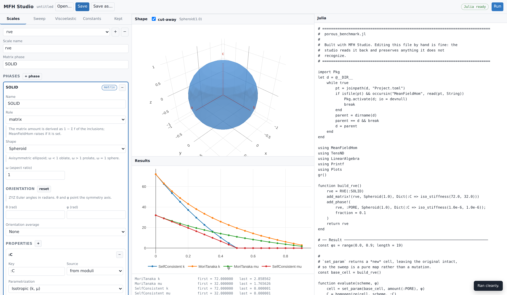
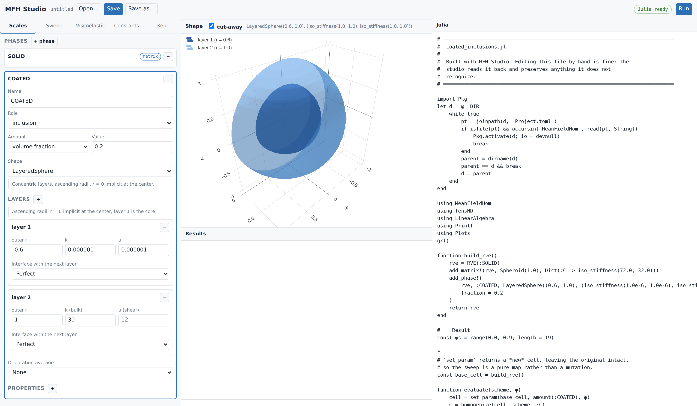
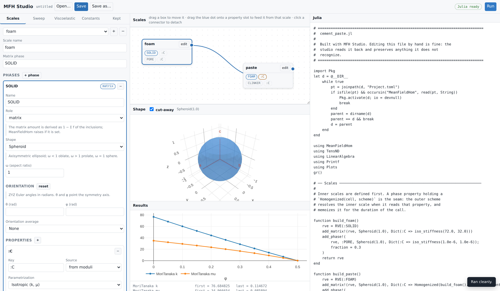
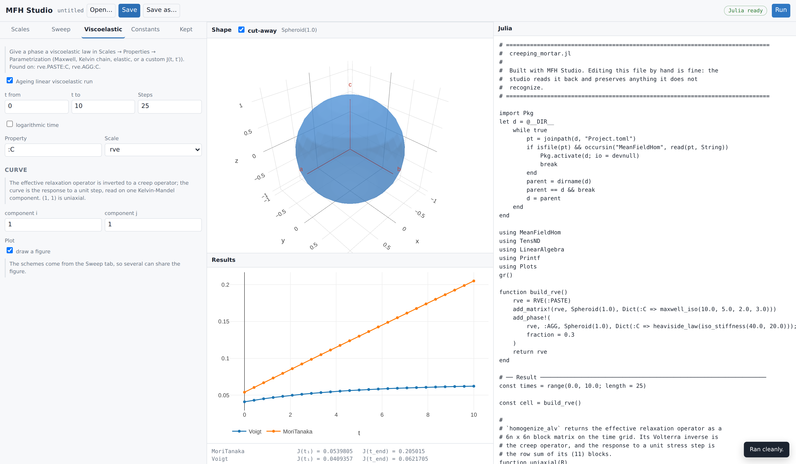

MFH Studio: building scripts graphically
MFH Studio is a local web interface that builds MeanFieldHomogenization scripts. It draws the shape of the phase being edited, runs the model, and — the part that makes it safe to use on existing work — reads a script back and preserves everything it does not recognize.
The script stays the deliverable. The studio is a way of writing one, not a format to be locked into.
Starting the studio
From a Julia session with MeanFieldHomogenization loaded — the studio ships with the checkout you develop:
using MeanFieldHomogenization
mfhstudio() # starts the server and opens a browser
mfhstudio(port = 9000) # pick a different port
mfhstudio(no_browser = true) # stay in the terminal
mfhstudio(check = true) # verify the Julia side and exitmfhstudio blocks the REPL, like Pluto.run(), until the studio stops: Ctrl-C in the REPL shuts the server and its Julia sidecar down cleanly. Pass wait = false to keep working while the studio runs — it returns the process handle, and wait(p) / kill(p) take it down again. host, port, project, julia and python map onto the Python app's command-line options below; project = "@mfhstudio" uses a shared environment, julia = ... / python = ... point at a specific executable (or set the MFHSTUDIO_PROJECT / MFHSTUDIO_PYTHON environment variables).
The same tool starts from a shell — Python 3.10+ underneath, standard library only:
cd tools/mfhstudio
python3 -m mfhstudio # starts the server and opens a browser
python3 -m mfhstudio --port 9000 # pick the port
python3 -m mfhstudio --no-browser # stay in the terminal
python3 -m mfhstudio --check # verify the Julia side and exitOn Windows, python -m mfhstudio.
It needs Python 3.10+ (standard library only) and a julia on PATH able to load MeanFieldHomogenization. Loading the package takes about ten seconds, paid once when the interface starts; the badge in the top-right turns green when it is ready. On a fresh checkout the sidecar instantiates the package environment first, which takes a few minutes once.
If Julia cannot start, the interface still comes up and says so in a banner: building and saving a script works, while the 3-D view, reading a script back and Run are off. --check diagnoses the Julia side without paying the load time, and is the right first command on a new machine.
One failure is worth knowing about. A development machine's local Manifest.toml — untracked, one per clone — may pin some dependencies to sibling checkouts (path = "../TensND.jl"), which only resolve when those siblings are there. If yours does and they are not, the studio does not need the clone's environment at all: MeanFieldHomogenization is registered in General, so a shared environment resolves everything from the registry.
using Pkg
Pkg.activate("mfhstudio", shared = true)
Pkg.add("MeanFieldHomogenization")To run the studio against a clone you are editing rather than the released version, develop it into that same environment instead:
Pkg.develop(path = raw"<path to MeanFieldHomogenization.jl>")Either way, start the studio against that shared environment — mfhstudio(project = "@mfhstudio"), or --project @mfhstudio from the shell. --check reads the manifest and names the missing checkouts itself.
The layout

Three columns: the model on the left, the shape and the results in the middle, the Julia on the right. The script is regenerated on every edit, so what is displayed is exactly what Save writes.
The Shape panel draws the geometry of the phase currently selected — a single inclusion, from its semi-axes and orientation. It is not a picture of the microstructure: mean-field homogenization never builds one, and nothing here places inclusions in a volume or shows how they are distributed. What the panel is good for is checking that the shape you described is the shape you meant.
The screenshot shows the porous benchmark after pressing Run — a solid matrix $(k, \mu) = (72, 32)$ with spherical pores swept over $\varphi \in [0, 0.9]$. The numbers reproduce the reference values captured from Echoes 1.0 (see From Echoes to MeanFieldHomogenization).
Two conventions the interface removes rather than documents:
- The matrix phase has no amount field. MeanFieldHomogenization derives it as $1 - \sum f_{\text{inclusions}}$ and raises if it is set, so offering the field would only invite an error.
- Moduli are entered as physical $(k, \mu)$ or $(E, \nu)$ and emitted through
iso_stiffness. The rawTensISO{3}constructor, which takes $(3k, 2\mu)$, never appears.
Shapes that have one carry an Orientation block: ZYZ Euler angles in radians, as many as the shape admits — two for a spheroid or a penny crack, which only need their axis pointed, three for an ellipsoid or an elliptic crack. The field shows the degree equivalent beside the label, and the drawing follows, so a mis-typed angle is visible rather than hidden until the numbers come out wrong.
Solver options follow the scheme rather than homogenize, and the list offered for each scheme is read from the scheme itself — SelfConsistent shows abstol, maxiters, damping, select_best; DifferentialScheme shows nsteps and formulation. The interface cannot fall behind MeanFieldHomogenization because it never hard-codes that list.
Layered inclusions

Choosing LayeredSphere turns the phase editor into a table of layers — outer radius, moduli, and the interface with the next layer (perfect, spring, membrane, Kapitza, surface-conductive). The 3-D view cuts the shells open, which is the only way a layered inclusion is readable at all: without the cut-away only the outermost shell is visible.
Radii are ascending with $r = 0$ implicit at the center, and layer 1 is the core — the same convention as LayeredSphere.
A LayeredSpheroid is described differently, because it must be confocal: every layer shares one focal distance, and radii entered one by one essentially never do. The form therefore asks for the outer aspect ratio, the outer semi-axis and a volume fraction per layer, and layered_spheroid_from_fractions solves for the confocal radii. It is a conduction geometry, so its layers carry a conductivity rather than moduli.
Multiscale

This is where the interface earns the most. MeanFieldHomogenization chains scales declaratively: a phase property may hold a Homogenized(inner_cell, scheme) instead of a tensor, and the outer scheme resolves the inner scale when it reads that key (see Multiscale models).
The Scales panel draws that graph. Each box is a scale; the blue dot on its right is its effective property; the dashed slots are the property keys of its phases. Dragging the dot onto a slot creates the seam — the connector appears and the Julia updates immediately. Clicking a connector detaches it.
The screenshot reproduces the foam/paste model of the multiscale manual: a foam homogenized self-consistently feeds the matrix of a paste containing clinker inclusions. The generated script emits build_foam() before build_paste(), because the graph is sorted topologically before writing.
A scale cannot feed itself: a connection that would close a cycle is refused when it is made, not when the script runs.
The sweep can cross scales too. The nested lens reaches through a seam into the inner cell, so sweeping the foam's porosity from the outer model is one lens rather than a hand-written closure:
cell = set_param(base_cell, nested(:FOAM, :C, amount(:PORE)), φ)An inner Homogenized cannot sit inside an ALV chain — the inner result would have to be re-expressible as a ViscoLaw. The interface refuses the combination instead of writing a script that fails at run time.
Choosing what to compute
The Sweep tab decides the shape of the run.
One point homogenizes once with the amounts entered in Scales — the answer when you simply want the number for the fractions you typed. Sweep varies one lens over a range and draws the curve.
Either way the schemes are a list: adding a second one puts both on the same figure, which is usually the reason to draw one. Each carries its own solver options, and switching a scheme clears them, because they belong to the scheme that reads them — MoriTanaka(; verbose = false) is a MethodError, the singleton schemes taking no keywords at all.
The outputs are chosen too, and this matters more than it looks:
| Output | Defined for |
|---|---|
k, μ, E, ν | an isotropic result only |
Kelvin-Mandel component KM[i,j] | any symmetry |
tensor component C[i,j] | 2nd-order properties (conduction) |
tr/3 | mean conductivity |
k_mu has a method for TensISO (a TensND type) and nothing else. An oriented inclusion with no orientation average does not give an isotropic effective tensor, so asking for k there fails deep inside the run with a MethodError. The interface says so before you run: either pick a reporting projection, or plot components, which are defined whatever the symmetry.
Viscoelasticity
A phase becomes viscoelastic through its property, not through a separate panel: in Scales → Properties → Parametrization, choose Maxwell, a Kelvin chain, an elastic (Heaviside) phase, or a custom $J(t, t')$. The generated call uses MeanFieldHomogenization's own signatures — maxwell_iso(k, μ, η_k, η_μ) takes two relaxation times, kelvin_iso takes whole branch vectors.

The Viscoelastic tab then only decides the time grid and the curve. It lists which phases carry a law, so a run with nothing to age says so rather than failing later. homogenize_alv returns the effective relaxation operator as a $6n \times 6n$ block matrix; the curve is its Volterra inverse read on one Kelvin-Mandel component — (1, 1) is the uniaxial creep response, the extraction used in scripts/62_alv_schemes.jl.
Anisotropic properties
Conductivity comes in three forms: isotropic $\kappa$, transversely isotropic $(\kappa_t, \kappa_a)$, and orthotropic $(\kappa_1, \kappa_2, \kappa_3)$. Stiffness offers isotropic $(k, \mu)$ or $(E, \nu)$, transversely isotropic Hoenig parameters, and the nine orthotropic constants. Anything else is typed as a Julia expression, which the generator passes through untouched.
The frame the constants are written in
An anisotropic tensor means nothing without its frame, so every anisotropic form carries its own Orientation block of ZYZ Euler angles. It is not the shape's orientation: a tilted fiber made of an untilted material and an untilted fiber made of a tilted material are different materials, and the two angle sets are stored and emitted separately.
What the angles produce depends on the symmetry class. A transversely isotropic tensor carries an axis rather than a basis — $\psi$ is irrelevant, the transverse plane being isotropic — so the studio emits the third vector of the frame:
hoenig_stiffness(30.0, 0.3, 0.2, 0.25, 0.5, vecbasis(RotatedBasis(π/4, 0.7, 0.0))[:, 3])
TensTI{2}(1.0, 5.0, vecbasis(RotatedBasis(π/4, 0.7, 0.0))[:, 3])An orthotropic tensor needs all three directions, and takes the basis itself. Tens(A, basis) stores A as the components in that basis, which is what "diagonal in the material frame" means:
TensOrtho(120.0, 90.0, 70.0, 40.0, 35.0, 30.0, 25.0, 22.0, 20.0, RotatedBasis(0.3, π/3, 0.0))
Tens([1.0 0.0 0.0; 0.0 2.0 0.0; 0.0 0.0 5.0], RotatedBasis(0.3, π/3, 0.0))Angles are radians, and the field accepts arithmetic: π/4, 2pi/3 and plain decimals all work, an expression reaching the script as written rather than as its seventeen-digit decimal. The degree equivalent is shown beside each field.
$h = 1$ together with $\nu_1 = \nu_2$ and $\gamma = 1$ is not a transversely isotropic material: it is the isotropic one, written in a transversely isotropic type. The axis then carries no information, and the schemes have a degenerate reference to work from. The defaults are away from that corner for this reason.
Opening an Echoes script
Open accepts a .py as well as a .jl. Picking a Python file makes the studio translate it with echoes2mfh, ask where the Julia should go, write it, and open the result — one action rather than a separate convert button, because the extension already says which of the two is happening.
The translator's findings come back with it. A script it could not translate whole reports how many constructs it refused, and each one sits in the written script as an UNTRANSLATED block that raises at run time, so a half-translated model cannot quietly produce numbers.
Reading an existing script
Open… browses the server's own filesystem — with shortcuts to scripts/, the package root and your home directory — rather than using the browser's file input. The browser never reveals a real path, and a path is exactly what saving back to the same file needs; listing server-side also keeps the picker correct when the studio runs on a remote machine. Save writes to the current file, Save as… asks for a new one.
Reading a .jl file back, two things can happen.
A script the studio wrote carries its model in a trailing comment block and reopens exactly. Any other script — a hand-written demo from scripts/, an echoes2mfh translation — is parsed by the Julia side using Meta.parse, the real parser, and matched against the vocabulary the generator emits.
Everything else is kept verbatim. It appears under the Kept tab, read only, and is written back byte for byte. Editing the model never rewrites it.
The rule is stricter than "parse what you can": a construct is only claimed when the studio can prove it reproduces it. Before accepting a builder, the reader renders it exactly as it would be saved and compares with the source; if the two differ, the original text is kept and the reason is shown. That is why a demo like scripts/28_porous_schemes.jl, whose builder takes typed and keyword arguments the model does not represent, opens without being damaged.
Constants behave the same way: one read from a file keeps its original text — multi-line layout included — until you actually edit it.
Across the 57 demo scripts in scripts/ and the translations produced by echoes2mfh, opening and writing back leaves every line intact.
What is not modeled yet
Sensitivities, laminates, and custom/FE/neural inclusions are outside the current scope. A script using them opens and is preserved, but those parts are not editable in the interface. Viscoelastic properties are entered as Julia expressions (maxwell_iso(10.0, 5.0, 1.0), ViscoLaw((t, t′) -> …, :creep)) rather than through a dedicated form.
See also
- Multiscale models — what the seam means and what it costs.
echoes2mfh— the Echoes translator, which shares this tool's code generator.